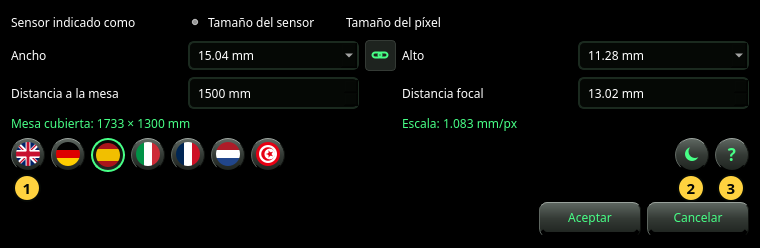

Ajustes
La cámara que da la escala, el idioma, el tema y el manual.
Ajustes abre el diálogo Ajustes. Contiene lo que la foto sola no puede decir: a qué distancia de la mesa está la cámara y, cuando la foto no lo indica, el objetivo y el sensor. También elige el idioma y el tema, y abre este manual.


La cámara
- Sensor indicado como — cómo describe el sensor: por su Tamaño del sensor (ancho × alto en mm) o por su Tamaño del píxel (ancho × alto de un píxel en µm). Use Tamaño del sensor salvo que sepa que la foto está a la resolución completa del sensor.
- Ancho y Alto — el tamaño del sensor, o el de un píxel. Elija una entrada de la lista o escriba un número. En el modo Tamaño del sensor la lista nombra formatos de sensor habituales (1/2.3″, 1″, APS-C, fotograma completo y otros); elegir uno fija también su alto.
- La cadena entre ambos — activada, el alto sigue al ancho (píxel cuadrado o sensor cuadrado). Se desactiva sola cuando un sensor nombrado tiene otro alto.
- Distancia a la mesa — de la cámara al tablero de la mesa, en mm. Mídala: cada milímetro cuenta (vea Referencia).
- Distancia focal — la distancia focal del objetivo en mm, tal como está impresa en el objetivo o la muestra la cámara. Use la distancia focal real, no el equivalente de 35 mm.
Bajo los campos, en verde, el diálogo muestra lo que dan estos valores:
- Mesa cubierta — la parte de la mesa que muestra la foto, en mm.
- Escala — el tamaño de un píxel sobre la mesa, en mm/px. Dos números (por ejemplo 0.578 × 0.646 mm/px) indican que los píxeles no son cuadrados.
Un resultado que necesita el tamaño de la foto dice — (necesita una foto) hasta que se muestra una foto en la ventana.
Las teclas redondas
- Las banderas — el idioma. Una bandera cambia el diálogo al instante, para que pueda leerlo; toda la aplicación lo sigue solo tras Aceptar. El árabe se escribe de derecha a izquierda.
- El tema — paneles oscuros o claros. Como el idioma, se muestra en el diálogo y se aplica con Aceptar.
- El ? — abre este manual en una ventana propia, en el idioma del diálogo.
Aceptar lo guarda todo. Si hay una foto mostrada y la cámara cambió, se vuelve a analizar enseguida. Cancelar o Esc no cambia nada, ni siquiera el idioma que estaba mirando.